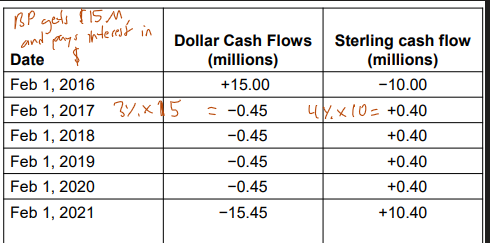

A swap is an agreement to exchange cash flows at specified future times according to certain specified rules.
Often users of swaps will either exchange a fixed rate loan to a floating rate loan, or a floating rate loan to a fixed rate. They want to do this because a firm may have a competitive advantage in either fixed or floating rates (due to credit score, etc) and an create savings by exchanging these interest rates.
Here AAA Corp wants to borrow floating rate, but has the most comparative advances in fixed rates at 1.2% lower than BBB (Big Baller Business?) Corp. As shown, the exchange ends up saving each firm 0.25% in what they were paying before or 0.5% total. Another way to calculate this is the two is to take the difference in fixed rates between the two firms, and minus the difference in advantage the floating rates. (1.2% - 0.7% = 0.5%).
If these two corps took a multiyear loan, but are only exchanging a 6-month LIBOR, then if the credit grade of AAA changes, the LIBOR will change while the fixed rates stay fixed.
Similar to a futures contract, these swaps are worth near $0 when they are written. The LIBOR is not known when the contract is written, so it must be determined to be profitable for both firms, so for both firms to agree, it be profitable for both firms.
To value the swap:
The value of the swap from A's perspective, is $0.5517 million for the $100 M loan. If either party wants to get out of the swap, they can sell it for $0.5517 M.
With a currency swap, the principle is exchanged at the beginning and end of swap. The purpose of a currency swap is to either convert a liability in one currency to a liability in another currency, or to convert an investment in one currency to an investment in another currency.
Here is an example of a fixed for fixed currency swap.
Below are the cash flows of this situation. Pay attention to the principle being exchanged.
